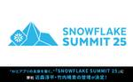

CARTA TECH BLOG
https://techblog.cartaholdings.co.jp/
CARTA HOLDINGS公式エンジニアブログです。CARTA HOLDINGSのエンジニアリング関連の情報、 イベント, エンジニアたちの様子などを投稿しています。
フィード

【6月2日〜5日サンフランシスコ開催 】“AIとアプリの未来を築く。”「SNOWFLAKE SUMMIT 25」に、CARTA MARKETING FIRM 近森淳平・竹内晴貴の登壇が決定！～グローバルカンファレンスで“現場主導のデータ基盤構築”を紹介～
CARTA TECH BLOG
株式会社CARTA HOLDINGSのグループ会社で、マーケティング特化の事業を展開する株式会社CARTA MARKETING FIRM（東京都港区虎ノ門、代表取締役：西園 正志、以下CARTA MARKETING FIRM）は、2025年6月2日（月）〜5日（木）にサンフランシスコで開催されるAIデータクラウド企業Snowflake（ニューヨーク証券取引所：SNOW）主催のカンファレンス「SNOWFLAKE SUMMIT 25」に、CARTA MARKETING FIRMのVPoD（Vice President of Data）近森 淳平および竹内 晴貴が登壇することをお知らせいたします。 …
9時間前
技術キャッチアップの質を上げるには？CTO からもらった秘伝のタレ(RSS) 70
70
CARTA TECH BLOG
こんにちは。CARTA HOLDINGS の Lighthouse Studio でエンジニアをやっている yoko です。普段は神ゲー攻略というゲーム攻略サイトの開発を担当しています。 この記事では、筆者が自身の情報収集方法を見直す中で、CTO に相談して共有してもらったサイトのリストの内容と、そこから得られた気づきについてお話しします。 3行まとめ 筆者が情報収集の効率化のため RSS フィードを見直す中で、CTO もRSS を活用していることを思い出した CTO に相談したところ、CTO が日々キャッチアップしているサイトのリストをゲットできた 共有されたリストは技術分野からビジネス動向…
13日前
現状維持に甘んじずデータドリブン経営への道を切り拓く。CARTA MARKETING FIRMの進化を生むコーポレートエンジニア 2
CARTA TECH BLOG
前回は、CARTA MARKETING FIRMの4社統合による組織の変革と、その中で生まれた課題について、CTO / DX推進局長の河村にお話を伺いました。 後編となる今回は、その具体的な取り組みの詳細と、CARTA MARKETING FIRMが目指す未来像について実際に課題に向き合っている石切山により深く掘り下げて聞いていきます。 登場人物 石切山 開(いしきりやま かい) 2014年 ヤフー株式会社に新卒入社。情報システム部門、セキュリティ部門、開発基盤部門を経験。2020年 株式会社VOYAGE GROUPに入社し、セキュリティチーム立ち上げと会社統合に向けた社内基盤構築を担当。20…
14日前
「人々の当たり前の基準を上げる」基盤を作る 〜 CARTA MARKETING FIRMの進化を生み出す経営基盤の在り方 〜 1
CARTA TECH BLOG
マーケティングパートナーとして企業の成長を支えるCARTA MARKETING FIRM。4社統合を経て新たな段階に進む同社では、データドリブン経営の実現に向けて基盤からの改善を行っています。前編ではCTO兼DX推進局長の河村が目指す未来を、後編ではコーポレートエンジニアの石切山がデータ経営への取り組みと展望を語ります。 登場人物 河村 綾祐(かわむら りょうすけ) CARTA MARKETING FIRM CTO 兼 DX推進局 局長。2005年よりインターネット広告業界でキャリアを積み、SIer、HR自社サービス開発、外資スタートアップ広告配信事業の日本ブランチにおいてCTOを務めた後、C…
14日前

TSKaigi 2025のゴールドスポンサー、ランチタイムスポンサーとして協賛します
CARTA TECH BLOG
株式会社CARTA HOLDINGS(東京都港区、代表取締役 社長執行役員：宇佐美 進典、東証プライム市場：証券コード3688)は、2025年5月23日(金)から24日(土)にベルサール神田にて開催されるTSKaigi 2025のゴールドスポンサー、ランチタイムスポンサーとして協賛し、ランチタイムLTに株式会社Lighthouse Studioの@yokoが登壇します。 ■協賛の背景 CARTA HOLDINGSでは、エンジニア組織が大切にしている価値観である「Tech Vision」の中で、「先人に感謝し、還元する」という指針を掲げています。CARTA HOLDINGSがテクノロジーを使った…
1ヶ月前
SnowPro Core 認定試験 受験記
CARTA TECH BLOG
CARTA MARKETING FIRM データ基盤チームのebikunです。2年目になり、フレッシュメンたちの追ってくる足音に背中を押されつつ3年目以降は感じ方変わるのかななどと過去と未来に思いを馳せたりしています。 本日めでたくSnowflakeから出ているSnowPro Coreという認定試験に合格したので、勉強どうやったとか実際の問題の感触とかを記憶の熱いうちに書いていきたいと思います。 SnowPro Core is 何 SnowPro Coreのホームページを見にいくとこんなことが書いてあります。 SnowPro Core認定資格は、 Snowflakeの実装や移行に関する特定のコ…
1ヶ月前
デジタルマーケティング企業でPMをやる上で求められること、魅力と大変さ
CARTA TECH BLOG
はじめに CCIで顧客向けシステムの開発に携わっているEZです。 デジタルマーケティングの会社なのにIT系コンサルティングファームやSIerみたいなことやってるの？と思われるかもしれませんが、CCIの親会社である電通もそうであるように、昨今は広告系の会社でも開発の業務を請け負っていたりします。 私は総合職からエンジニアを経て現在はPM（プロジェクトマネージャー）をしています。その立場から、ITプロジェクトを進める面白さや大変さ、必要なスキルについてわかったことをまとめます。 想定読者 ITやWEB業界に就職したいと考えているが、エンジニア職はハードルが高いと感じている人 現在エンジニアをしてい…
1ヶ月前
CARTA HOLDINGS の生成 AI 活用【Lighthouse Studio の事例】
CARTA TECH BLOG
CARTA HOLDINGS の Lighthouse Studio は、「神ゲー攻略」や「Kaubel」などのメディアを運営している事業部です。この記事では、Lighthouse Studio の開発チームにおける生成 AI 活用の紹介と考察についてお話しします。 3行まとめ Lighthouse Studio の開発チームでは、生成 AI を活用して生産性を高める方針を打ち出した 開発チーム全員が生成 AI のツールを使えるよう環境を整えつつ、検証を通じて自律型 AI エージェント devin.ai の可能性を探った 自律型 AI エージェントを活用することで作業時間や費用を削減できる一方…
1ヶ月前
【PHPerKaigi 2025】3名のエンジニアが登壇しました！
CARTA TECH BLOG
左から @ryu9555, @_guri3, @konsent_nakka 技術広報しゅーぞーです。今回は当社から3名のエンジニアがプロポーザル採択され登壇しました。その模様をお届けします。 phperkaigi.jp 登壇①：なっかー「PHPでお金を扱う時、終わりのない謎の1円調査の旅にでなくて済む方法」 fluct @konsent_nakka fluct @konsent_nakka は「PHPでお金を扱う時、終わりのない謎の1円調査の旅にでなくて済む方法」というテーマで登壇しました。 speakerdeck.com 登壇では、PHPでの数値計算、特にお金を扱う際の問題点について実践的な…
1ヶ月前
941さんに教わったカンファレンスブース設計の秘訣
CARTA TECH BLOG
こんにちは、CARTA HOLDINGS 技術広報のしゅーぞーです。 今回はCARTAの技術広報メンター @941さんに教わった「カンファレンスブース設計」の秘訣をご紹介します。 背景と経緯 CARTA は2024年4月より 技術広報のコンサルティングをしている @941さんに技術広報メンタリングを行っていただいています。 コロナ禍で社内のカンファレンスブース出展ナレッジが薄くなっていたため、 @941さんに教わりながら1からブース設計のノウハウを学びました。 そのサポートもあり、2024年10月から半年で約5個のカンファレンスにブースを出しました。 その中で学んだこと、また@941さんにフィ…
2ヶ月前
プロンプト駆動開発、始めました。
CARTA TECH BLOG
はじめに こんにちは、Lighthouse Studioの新卒1年目エンジニアの きっちゃん です。 最近はAIエージェント搭載のエディタ等(Cline, Cursorなど)を利用するのが当たり前になり、自力でコードを書く機会が減ってきています。 完全自律型AIエージェントであるDevinに至っては、スマホからSlackで指示を出すだけで、PCを開くことすらせずにPRが出来上がったりもするわけで... そこで最近、まず初めにプロンプトを作成する「プロンプト駆動開発」を試しています。 本記事では、その概要と恩恵について紹介します。 結論として、プロンプトを整理することで要件や仕様の解像度が高まり…
2ヶ月前
登壇にあたってプロポーザルを考え、発表スライドを作るまでの流れとtips
CARTA TECH BLOG
CARTA fluct エンジニア の なっかー @konsent_nakka です。 PHPerKaigi2025 (3/22, 3/23) に @konsent_nakka @ryu9555 @_guri3 の3人で登壇してきました！ その経験からどうやって登壇を成功させるまでに至ったのか、流れやTipsを備忘録として残します。未来の私やこれから登壇する人はぜひ参考にしてください。 そして今回の登壇をするにあたって、かなりのサポートをしてもらいました。 @ShuzoN__ さん、 @t_wada さん、 @soudai1025 さん、 @shin1x1 さん、 CARTAデザイナーの與野 …
2ヶ月前
【全文 文字起こし】技育祭 春🌸 CARTA登壇 レポート
CARTA TECH BLOG
技術広報しゅーぞーです。CARTAHOLDINGSは技育祭2025春に協賛し、ブース出展に加えて登壇も行いました！今回は「CARTA登壇の全文文字起こし」をお届けします！ スライド タイトル : AIは脅威でなくチャンス。 AIと共に進化するエンジニアの成長戦略 登壇者 : CARTA全社CTO: @suzu_v 概要 AIの登場で不安を感じる学生も多いでしょう。むしろ大きなチャンスです。AIはプロトタイピングを容易にし、学習を劇的に加速する強力なツールです。本講演では、2025年の技術環境とCARTAの実際の開発事例を交えながら、AIと共に進化するエンジニアの成長戦略をお伝えします。 spe…
2ヶ月前
🌸技育祭2025 春🌸 登壇 & ブース展示を行いました！
CARTA TECH BLOG
技術広報しゅーぞーです。CARTAHOLDINGSは技育祭2025春に協賛し、ブース出展に加えて登壇も行いました！今回はその模様をお届けします! 技育祭とは 技育祭は、サポーターズが主催するテックカンファレンスです。 geek.supporterz.jp 登壇セッション CARTA CTO @suzu_v 登壇セッションでは「AIは脅威でなくチャンス。AIと共に進化するエンジニアの成長戦略」というタイトルで、CARTA全社CTO @suzu_v が、AI含む現在のテクノロジー業界の状況と、学生がこれからどのようにキャリアを築いていけばよいかについてお話ししました。 speakerdeck.co…
2ヶ月前
【きのこカンファレンス2025】ランチスポンサーとして協賛！ブース展示 &登壇全文公開！
CARTA TECH BLOG
技術広報しゅーぞーです。CARTA HOLDINGSはきのこカンファレンス2025に協賛しました！🍄 今回はブース出展に加えて、登壇も行いました。その模様をお届けします。 kinoko-conf.dev ブース出展のテーマ 今回は「エンジニアとしての成長と人生の転機をシェアする」をテーマにブースを展開しました。 約100名もの方々に訪れていただき、様々な年代・バックグラウンドのエンジニアの方々とお話できました。特に30代以上のWeb系エンジニアが多く、キャリアについて深い対話ができました。 ブース: 人生の調子の良い時期と悪い時期 今回のブースでは、インタラクティブな企画を用意しました。 エン…
2ヶ月前
【EMConf JP 2025】テクニカルパートナーとしてブース出展＆配信サポートしてきました！
CARTA TECH BLOG
技術広報しゅーぞーです。CARTA HOLDINGSはEMConf JP 2025にテクニカルパートナーとして協賛しました！ 今回はブース出展に加えて、配信のテクニカルサポートも担当。その模様をお届けします。 テクニカルパートナーとしての取り組み EMConf JP 2025では、 会場内の中継およびアーカイブ配信のテクニカルサポートを担当 させていただきました。エンジニアリングマネジメントに関する貴重な知見を、より多くの方々に届けられるようサポートできたことを嬉しく思います。 KeyNoteが公開されているのでぜひ見てみてくださいね！ #emconf_jp Keynote 1️⃣エンジニアリ…
2ヶ月前
技育博に参加したら学生のレベルに圧倒された話
CARTA TECH BLOG
「技育博」にスポンサー企業のエンジニアとして参加し、学生たちの高い技術力や行動力に圧倒された話。プロダクトのクオリティや交流から得た学びをレポート。
2ヶ月前
CARTA HOLDINGS、2025年3月開催の「NLP 2025」にプラチナスポンサーとして協賛
CARTA TECH BLOG
株式会社CARTA HOLDINGS(東京都港区、代表取締役 社長執行役員：宇佐美 進典、東証プライム市場：証券コード3688)は、2025年3月10日（月）から14日（金）に出島メッセ長崎にて開催される言語処理学会第31回年次大会(NLP2025)のプラチナスポンサーとして協賛いたします。 CARTA HOLDINGSは当日、データサイエンスエンジニアが現地参加いたします。 ■協賛の背景 CARTA HOLDINGSでは、エンジニア組織が大切にしている価値観である「Tech Vision」の中で、「先人に感謝し、還元する」という指針を掲げています。CARTA HOLDINGSがテクノロジーを…
2ヶ月前
EMConf JP 2025 参加記
CARTA TECH BLOG
CARTA MARKETING FIRMのDSP(Demand-Side Platform)部で部長をしている @wanimaru47 です。 Engineering Manager Conference Japan 2025に参加してきました。 7割ぐらいはEM的な仕事をしている人が参加していたイメージです。 残り3割は、VPoE・CTO、学生、EMに興味のあるICや広報といった印象でした。 参加者は200人以上いたのではないかと思います。基調講演も満席に近くとても盛況な印象でした。 講演 エンジニアリングマネージャーのロードマップエンジニアリングマネジメントの4次元と生成AI時代の戦い方 …
2ヶ月前
2025年3月9日開催の「エンジニアがこの先生きのこるためのカンファレンス」にランチスポンサーとして協賛し、登壇およびブース展示を行います
CARTA TECH BLOG
株式会社CARTA HOLDINGS(東京都港区、代表取締役 社長執行役員：宇佐美 進典、東証プライム市場：証券コード3688)は、2025年3月9日にdocomo R&D OPENLAB ODAIBAにて開催される「エンジニアがこの先生きのこるためのカンファレンス2025」のランチスポンサーとして協賛し、登壇およびブース展示を行います。 「エンジニアがこの先生きのこるためのカンファレンス」は、登壇者は40歳以上のベテランエンジニアに限定し、長年の経験や知見を共有するカンファレンスです。エンジニアとして長く活躍できるヒントを得ることができます。 CARTA HOLDINGSからはスタッフエンジ…
3ヶ月前
fluctコンソールチームで内定者インターンして学んだ、チーム開発のコツ
CARTA TECH BLOG
こんにちは！ 内定者インターンとしてfluctの管理画面リプレースプロジェクトに参加している25卒内定者エンジニアのくま@k-kumakuraです！ 去年の12月からfluctコンソールチームで実際に作業してみたところ、エンジニアリング以外にも「こうしておけばよかった！」と学ぶことが予想以上に多かったので、ここにまとめました。 同じように悩む方のヒントになれば幸いです。 特にこれから入社する25卒や来年入社を控える26卒の皆さんにはぜひ読んで欲しいです。 多くの先輩方からのアドバイスが詰まっているので間違い無いと思います！ レビュワーはエスパーじゃない！前提共有は惜しまない 「PRデカすぎ」問…
3ヶ月前
O'Reilly Online LearningのCloud Labsで、Terraformを使ってみたらハマったこと
CARTA TECH BLOG
こんにちは！fluctの新卒1年目エンジニアのshunshunです！ CARTAではO'Reilly Online Learningを契約しているのですが、そこでのつまづきを共有します。 techblog.cartaholdings.co.jp 結論だけ O'Reilly Online LearningではCloud Labsという機能を使ってAWSの機能などを短時間試すことができます ただし、リージョンはバージニア(us-east-1)しか使うことはできません 詳解Terraformのコードはオハイオ(us-east-2)のリージョンを例としていたので、そのまま使えなくてハマってしまいました…
3ヶ月前
【"しっぺ返し"が学びに変わる】少数精鋭で技術選定・企画・設計・実装を担う現場エンジニアの挑戦とやりがい
CARTA TECH BLOG
前編では、Lighthouse Studioの事業概要とエンジニア組織の特徴について、CTO 海老原さんにお話を伺いました。後編では、ゲームメディア事業とコマースメディア事業を担当する2名のエンジニアに、それぞれの事業における取り組みについて詳しく聞いていきます。 ゲーム事業概要 - 国内外へ少数精鋭で挑む 横沢 諒 (yoko) 2022年 株式会社CARTA HOLDINGSに新卒入社。入社後よりLighthouse Studioに配属され、神ゲー攻略を中心としたゲームメディア事業の開発・運用に従事。 神ゲー攻略の事業概要について -- まず、国内ゲーム攻略サイト『神ゲー攻略』の概要を教え…
3ヶ月前
【ゲームメディアの知見がECメディアを変える？】二刀流メディアで進化が加速するシナジーを生むエンジニア文化
CARTA TECH BLOG
はじめに 今回は、CARTA HOLDINGSの事業部Lighthouse Studioが、どのような事業を展開し、技術的な取り組みをしているのかインタビューしました。ゲームメディアとECメディアを同時に展開するLighthouse Studioについて、エンジニア3名のお話をお楽しみください。 前編では、事業部全体の技術領域を担うCTO 海老原にLighthouse Studioの全容を聞きます。後編ではゲームメディアとECメディアを担当する2名のエンジニアにそれぞれの取組について詳細に聞いています。 techblog.cartaholdings.co.jp この記事の登場人物 海老原 昂輔…
3ヶ月前
“ロジック開発はビジネス戦略そのもの”に共感し入社──DSPロジックの進化を追求するデータサイエンティストの挑戦
CARTA TECH BLOG
はじめに 2025年1月から株式会社CARTA MARKETING FIRM プロダクト管轄 開発局 DSP部 MLチームに入社した伊崎さんにインタビューを行いました。 「ロジック開発はビジネス戦略そのもの」に共感した 「DSPのロジック開発は、いわばデータサイエンスの総合格闘技」でありそれに惹かれた と語ってくれました。では早速、本編に参りましょう。 自己紹介 -- 自己紹介をお願いします 2025年1月から株式会社CARTA MARKETING FIRM プロダクト管轄 開発局 DSP部 MLチームにジョインした伊崎です。入社まで計2社で5年ほどマーケティング領域のデータサイエンスやデータ…
3ヶ月前
ESLintがセグフォする件を調査していたら、Node.jsにコントリビュートしていた話
CARTA TECH BLOG
はじめに こんにちは、サポーターズでエンジニアをしている@y_chu5です。 本記事では、当初ESLintのバグと思われていた問題が、実はNode.jsのバグであることが判明し、その修正に至るまでの過程をご紹介します。この体験を通じて得られた知見は、小中規模なプロジェクトのデバッグ手法として参考になるかもしれません。 まず、この問題の発見と初期調査において、VOICEVOXコミュニティのコミュニティサーバーの方々の多大なる貢献があったことを深く感謝申し上げます。彼ら彼女らの綿密な調査と報告がなければ、今回の問題解決には至らなかったと考えています。 問題との出会い 私の所属している VOICEV…
3ヶ月前
SnowflakeのALTER TABLEで100万溶かした顔になった
CARTA TECH BLOG
株式会社CARTA MARKETING FIRMでDSP(Demand-Side Platform)の開発をしている機械学習エンジニアのmikanfactoryです。特にMLOpsを担当しています。 背景 当社のDSPでは、配信ログを用いた機械学習モデルによる配信最適化を行っています。データパイプラインはSnowflake+dbtで構築し、Prefectを使用して機械学習モデルの構築・デプロイを実施しています。 サービスの成長に伴い、データパイプラインのコストは徐々に上昇傾向にありました。特に12月中旬には大幅なコスト増加が発生し、さらに年末年始の繁忙期を控えていたため、早急なコスト対策が必要…
4ヶ月前
PRレビューを自分や相手のために快適にしよう
CARTA TECH BLOG
CARTA fluct エンジニア の なっかー @konsent_nakka です。 PRをレビューする時、レビューされたPRを見る時、どんな辛さを感じていますか？ レビューする時 PRが大きくて脳のメモリに収まりきらない 1つのPRで複数のことをやっていて、変更箇所がなんのために変更されているのかわからない タイトルやdescriptionに変更意図を読み解くために必要な情報がない、または整理されていない 結果、何をやりたいPRなのかすんなり分からない レビューコメントの意図が過不足なく伝わるか心配 レビューされた時 細かい質問や指摘が多くて、変更や返答に時間がかかる 修正箇所が多すぎて元…
4ヶ月前
CARTA HOLDINGS、2025年2月開催の「EMConf JP 2025」にテクニカルパートナーとして協賛
CARTA TECH BLOG
株式会社CARTA HOLDINGS(東京都港区、代表取締役 社長執行役員：宇佐美 進典、東証プライム市場：証券コード3688、以下「CARTA HD」)は、2025年2月27日（木）にベルサール新宿グランドコンファレンスセンターにて開催される「Engineering Manager Conference Japan 2025」にテクニカルパートナーとして協賛します。 「Engineering Manager Conference Japan（EMConf JP）」は、エンジニアリングマネジメントに携わる方々が一堂に会するカンファレンスです。本年度は「増幅」と「触媒」をテーマに掲げ、Engin…
4ヶ月前
セルフレビューをして自分とレビューする人の無駄な時間を減らそう
CARTA TECH BLOG
CARTA fluct エンジニア の なっかー @konsent_nakka です。 この記事のコンテキスト 「よっしゃPRできた！」「(他の人からの指摘と質問の嵐)」「ぐあああああああ！！」のパターンを何度も踏んできました。 PRのレビューをしている時、またはお願いした時に起きる問題はいくつかあります。 レビュアーに実装の意図が伝わらなくて質問責めにあい、返答したり追加質問されたりしている間に多くの時間がかかる 単純なミスが残っており、無駄にやり取りが往復する レビューを出した時に返ってくるのが遅い、また自分がレビューする時に時間がかかってしまう これらの問題はあらかたセルフレビューで改善…
4ヶ月前